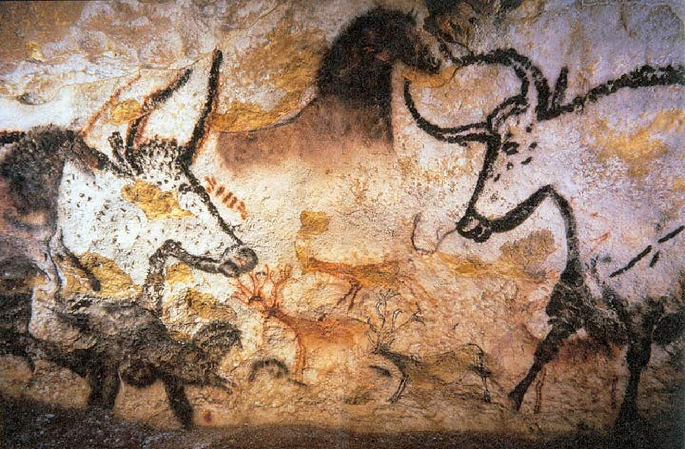
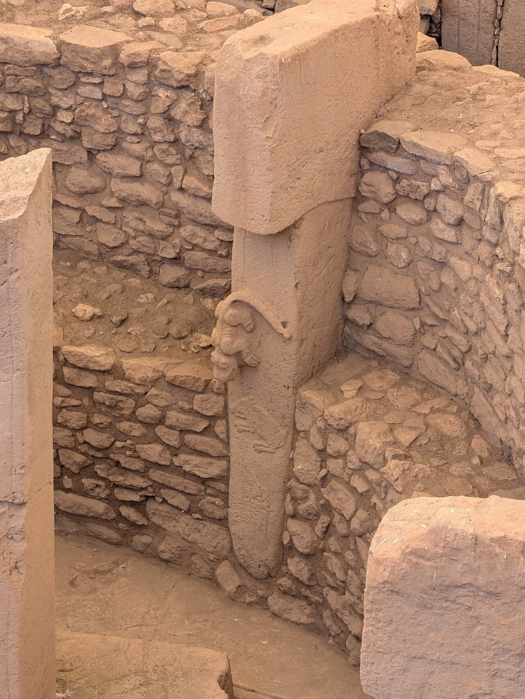
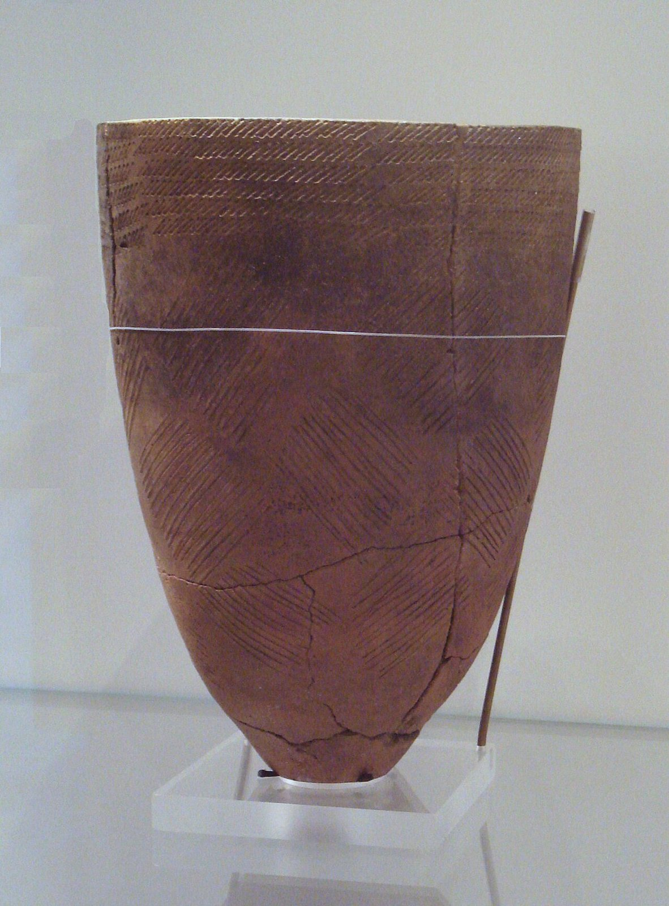
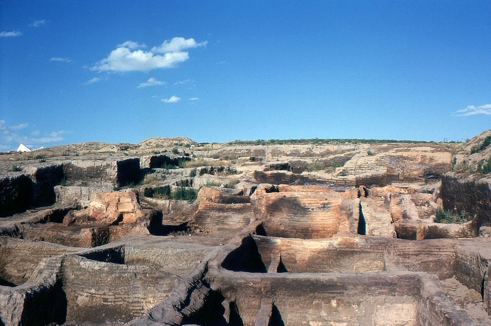
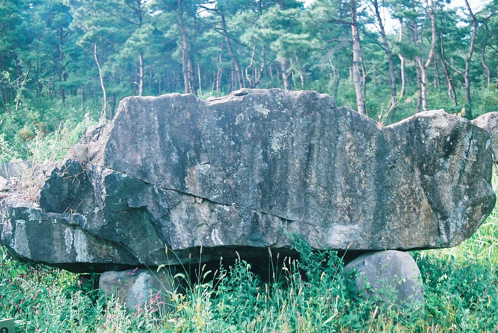

사진 · 라스코 동굴 벽화의 소와 말
중학교 역사① · 2단원 문명의 발생과 고대 세계의 형성
동굴선사 시대: 뗀석기에서 농경으로
라스코 동굴 벽화 · Wikimedia Commons · 퍼블릭 도메인
“농사는 인류에게
농사는 인류에게
축복이었을까?
사실사냥하던 사람들이 씨를 뿌렸다
해석무엇을 얻고, 무엇을 잃었을까
확장우리는 지금 그 선택 위에 산다
뗀석기구석기 · 깨뜨려 만든 돌
간석기신석기 · 갈아 만든 돌
토기신석기 · 흙을 구운 그릇
사진 · 왜 어두운 동굴 깊은 곳에
그렸을까?
왜 어두운 동굴 깊은 곳에
그렸을까?
사실소 · 말 · 사슴
해석사냥이 잘되길 빌었을까, 이야기였을까
확장글이 없으면 답은 누가 정할까
라스코 동굴 벽화 · Wikimedia Commons · 퍼블릭 도메인

사진 · 농사보다
신전이 먼저였을까?
농사보다
신전이 먼저였을까?
사실1만 1천여 년 전의 돌기둥
해석사냥하던 사람들이 왜 모였을까
확장새 발굴은 이야기를 바꾼다
괴베클리 테페 C구역 27번 기둥 · 사진 Kerimove · CC0
씨앗
씨를 뿌리면 무엇이 달라질까?

사진 · 그릇이 생기면
무엇이 달라질까?
그릇이 생기면
무엇이 달라질까?
사실서울 암사동의 빗살무늬 토기
해석담고, 끓이고, 저장하고
확장바닥은 왜 뾰족할까
빗살무늬 토기(서울 암사동 출토) · Wikimedia Commons · CC BY-SA 2.5

사진 · 문도 골목도 없는
마을?
문도 골목도 없는
마을?
사실9천여 년 전, 수천 명
해석지붕으로 드나든 집
확장왜 이렇게 붙어 살았을까
차탈회위크 발굴 현장 · 사진 Omar hoftun · CC BY-SA 3.0
농사는 축복이었을까?
늘어난 사람인구
늘어난 일노동 시간
늘어난 병모여 살기 · 가축

사진 · 이 돌은
누가 옮겼을까?
이 돌은
누가 옮겼을까?
사실수십 톤이 넘는 덮개돌
해석많은 사람을 부릴 수 있는 사람
확장농사와 지배자
고창 고인돌 유적 · 사진 Kussy · CC BY-SA 2.1 jp
누가 이 이야기를
썼을까?
사실글이 없던 시대
해석유물로 추론한 고고학자
확장새 발굴은 이야기를 바꾼다
“농사는 인류에게 이었다.